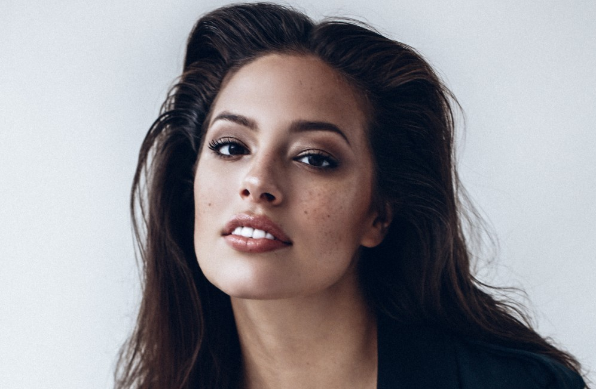
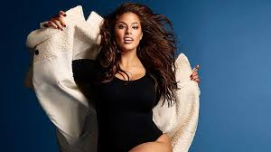

Biography
Ashley Graham is one of the most recognized plus-sized American models in the industry, gracing the covers of major fashion magazines.
Graham was discovered at the age of 12 at a shopping mall in Lincoln, Nebraska. Soon after she was appearing in ads and catalogues and steadily learning the ropes of what it took to be a serious model. By the time she turned 18, she had moved to New York City to pursue her career full time.Graham first signed on with Wilhelmina Models in 2001 but two years later, moved to Ford Models until the agency closed down its plus-sized division.
Currently, she is represented by IMG. Graham has appeared on the covers of Vogue , Elle , Glamour , Harper's Bazaar and has walked the New York Fashion Week runways, most notably for Michael Kors' spring/summer 2018 collection.Among the many fashion campaigns she's appeared in, Graham has worked with Bloomingdale's, Liz Claiborne, Hanes, Target, Macy's, Levi's.
Ashley Graham is one of the most influnetial people because she became the first plus size model on the cover of Sports Illustrated. Ashley Graham teaches girls and women that your size doesn't define you and if you work hard to achieve something you can do it. Ashley has redefined the modeling community and proved that you don't have to be skinny to be beautiful. Ashley is a female role model and many girls strive to be just like her.